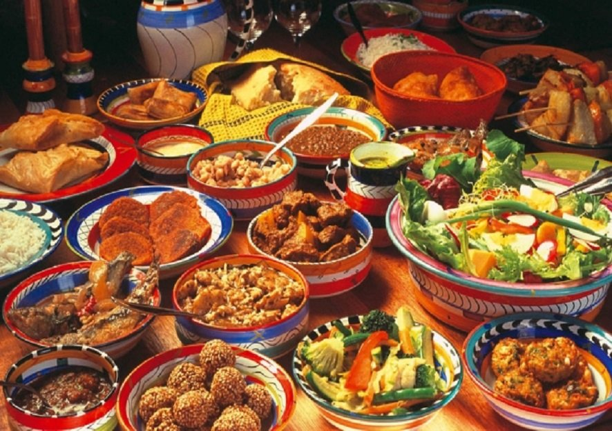

აფრიკული ხელოვნება სიმბოლურია და ხშირად ასახავს ბუნებასა და რელიგიურ რწმენას. რიტუალური ცეკვა და ბარაბნის მუსიკა ყოველდღიურ ცხოვრებაში და დღესასწაულებზე მნიშვნელოვანი ნაწილია.
ტრადიციული აფრიკული სამზარეულო იყენებს კასავას, ქორს, ჭვავს და სხვადასხვა სუნელებს. ცხოვრების სტილი ვარიაცირებს რეგიონულად: ჩრდილოეთ აფრიკაში დომინირებს არაბული ტრადიციები, ხოლო სამხრეთ რეგიონებში ძირითადად ადგილობრივი კულტურებია გადამდგარი.